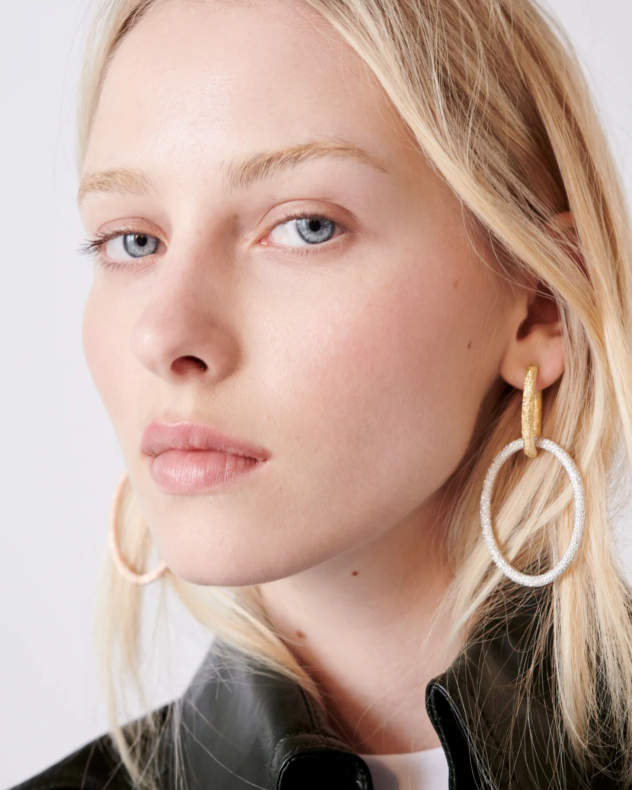

A signature technique of Carolina Bucci first
mastered in the
family workshops in the 19th
century, the Florentine Finish is
a precise, time-consuming treatment with a beautiful reward. Every
part of the gold is hand-beaten with a diamond-
tipped tool,
leaving faceted indentations on the
surface and subtle sparkle
that lasts.

Discover our collection of 18k gold Hoops & Links in our signature Florentine
Finish. Transform day-to-day earrings into swinging, sparkling statements.